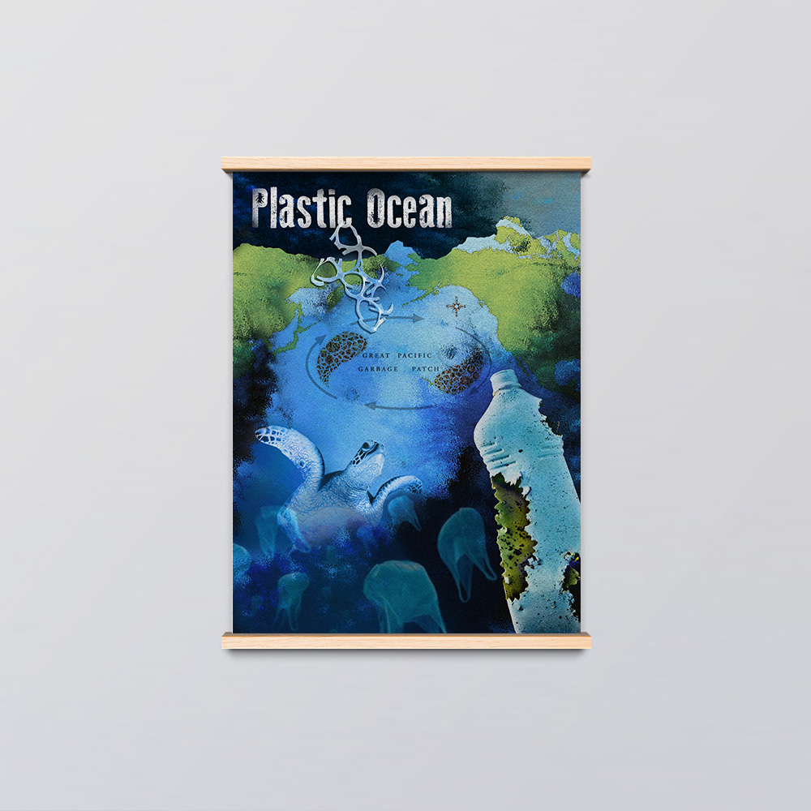

<section id="old-siam" class="project-details">
  <div class="project-body row no-gutters align justify-content-center">
    <div class="project-title">
      <h1>The Old Siam</h1>
    </div>
    <div class="project-summary">
      This project focuses on rebranding a restaurant and designing a brand identity kit along with the menu, and packaging materials.
    </div>
    <div class="project-img-caption">
      Coaster
    </div>
    <div class="project-img col-8" style="text-align: center">
      
    </div>
    <div class="project-img-caption">
      Business cards
    </div>
    <div class="project-img col-8" style="width: 900px;">
      
    </div>
  </div>
</section>